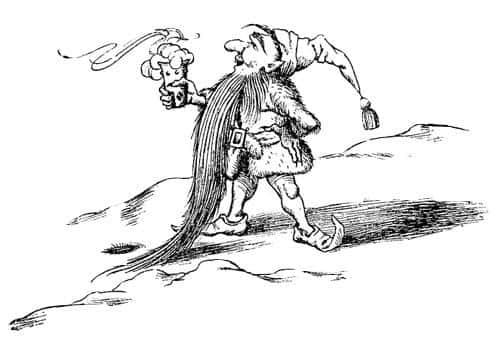

Türk Lokumu
“Fakat sen nesin?” dedi Kraliçe yeniden. “Sen sakalını kesmiş, biraz fazla büyümüş iri bir cüce misin?”
“Hayır Majesteleri” dedi Edmund, “Benim henüz sakalım çıkmadı, ben bir çocuğum.”
“Bir oğlan çocuğu!” dedi Kraliçe. “Bir Âdemoğlu olduğunu mu söylemek istiyorsun?”
Edmund hiçbir şey söylemeden sessizce dikildi. Artık ne sorulduğunu anlamayacak kadar şaşkındı.
“Ne olursan ol, aptallığın belli oluyor” dedi Kraliçe. “Son olarak bir cevap daha ver bana, yoksa sabrım taşacak. Sen insan mısın?”
“Evet Majesteleri” dedi Edmund.
“Öyleyse benim hükmettiğim bu topraklara nasıl girdin?”
“Lütfen Majesteleri, bir dolaptan geçerek geldim.”
“Dolap mı? Ne demek istiyorsun?”
“Ben – ben kapıyı açtım ve kendimi burada buldum Majesteleri” dedi Edmund.
“Ha!” dedi Kraliçe, Edmund’dan ziyade kendi kendine konuşarak. “Bir kapı ha? İnsanların dünyasından bir kapı. Bu her şeyi berbat edebilir. Fakat bu çocukla tek başına ve kolaylıkla baş edilebilir.” Bunları söylerken oturduğu yerden kalktı ve gözleri alevler saçarak Edmund’un yüzüne baktı, aynı anda asasını kaldırdı. Edmund onun korkunç bir şey yapacağına emindi ancak kıpırdamasına olanak yokmuş gibi görünüyordu. Sonra tam her şeyi kaybedeceğini düşünürken Kraliçe fikrini değiştirir gibi oldu.
“Zavallı çocuğum benim” dedi tamamen farklı bir sesle, “ne de çok üşümüş görünüyorsun! Gel kızakta yanıma otur, mantomla seni örteyim ve konuşalım.”
Edmund bundan hiç hoşlanmamıştı, fakat itaatsizlik etmeye cesaret edemedi; kızağa tırmandı ve Kraliçe’nin ayaklarının dibine oturdu, Kraliçe kürk mantosunun etekleriyle onu örterek sımsıkı sardı.
“Belki sıcak bir şey içmek istersin” dedi Kraliçe. “İster misin?”
“Evet, lütfen Majesteleri” dedi dişleri takırdayan Edmund.
Kraliçe eşyalarının arasında bir yerden bakırdan yapılmış gibi görünen küçük bir matara çıkardı. Sonra kolunu uzatarak kızağın yanındaki karın üzerine bir damla damlattı. Edmund bir saniye için, havada elmas gibi parlayan bu damlayı gördü. Damla kara değer değmez bir cızırtı duyuldu ve çıkan buharın üzerinde içi dolu, mücevherlerle kaplı bir fincan belirdi. Cüce fincanı alıp pek de dostça olmayan bir gülümsemeyle, eğilerek Edmund’a verdi. Edmund sıcak içeceği yudumlamaya başladıktan sonra kendini çok daha iyi hissetti. Daha önce böyle bir şey tatmamıştı; köpüklü, çok tatlı, sütlüydü ve onu ayak parmaklarının ucuna kadar ısıtmıştı.

“Âdemoğlu” dedi Kraliçe aniden, “bir şeyler yemeden, içmenin tadı olmaz. Ne yemek istersin?”
“Türk lokumu, lütfen Majesteleri” dedi Edmund.
Kraliçe matarasından kara bir damla daha damlattı ve aniden yeşil ipek bir kurdeleyle bağlı yuvarlak bir kutu belirdi. Kutuda kilolarca en iyi cins Türk lokumu vardı. Bütün lokumlar tatlı ve hafifti. Edmund hayatında bundan daha lezzetli bir şeyin tadına bakmamıştı. Şimdi içi oldukça ısınmıştı ve çok da rahattı.
O yerken, Kraliçe soru sormaya devam etti. Önceleri Edmund ağzı doluyken konuşmak gibi bir kabalık yapmamaya çalışıyordu fakat kısa bir süre sonra bunu unutup yalnızca mümkün olduğu kadar çok Türk lokumu tıkınmayı düşünür oldu. Yedikçe, daha fazla yemek istiyordu. Kraliçe’nin neden bu kadar meraklı olduğunu kendi kendine hiç sormadı. Kraliçe, bir erkek ve iki kız kardeşinin olduğunu, kız kardeşlerinden birinin Narnia’yı ziyaret ettiğini ve bir Faun’la karşılaştığını, erkek kardeşi ve iki kız kardeşinden başka kimsenin Narnia hakkında bir şey bilmediğini ona itiraf ettirmişti. Onların dört kişi oldukları gerçeğiyle özellikle ilgilenmiş gibi görünüyordu ve sürekli bu konuya dönüyordu. “Sadece dört kişi olduğunuzdan eminsin değil mi?” diye soruyordu. “İki Âdemoğlu ve iki Havvakızı, ne fazla ne de eksik?” Ve ağzı Türk lokumu ile dolu Edmund “Evet, bunu daha önce de söylemiştim” diye tekrarlayıp duruyordu. Ona “Majesteleri” diye hitap etmeyi unutmuştu, ama Kraliçe’nin buna aldırdığı yoktu artık.
Sonunda Türk lokumunun hepsi bitmişti ve Edmund boş kutuya istekle bakarak, Kraliçe’nin biraz daha lokum isteyip istemediğini sormasını bekliyordu. Kraliçe onun ne düşündüğünü muhtemelen gayet iyi biliyordu. Edmund farkında değildi, ama o, bu lokumların büyülü olduğunu biliyordu. Onun tadına bakan herkes daha fazlasını isterdi ve izin verilirse çatlayana kadar yemeye devam ederdi. Fakat daha fazla lokum ikram etmedi. Onun yerine Edmund’a dedi ki:
“Âdemoğlu, senin erkek ve kız kardeşlerinle tanışmak isterim. Onları bana getirir misin?”
“Denerim” dedi Edmund hâlâ boş kutuya bakarak.
“Çünkü yeniden gelirsen – tabii onları da beraberinde getirerek – sana biraz daha Türk lokumu verebilirim. Şimdi veremem, çünkü büyü sadece bir kere yapılabiliyor. Benim evimde olsaydık bu farklı olurdu.”
“Neden senin evine gitmiyoruz şimdi?” dedi Edmund. Kızağa ilk bindiğinde Kraliçe’nin onu kızakla, geri dönemeyeceği, bilinmeyen bir yere götüreceğinden korkmuştu ancak şimdi, bunu tamamen unutmuştu.
“Benim evim çok hoş bir yerdir” dedi Kraliçe. “Eminim çok seversin. Türk lokumuyla dolu odalar var ve dahası, benim çocuğum yok. Prens olarak yetiştirebileceğim ve ben öldüğümde Narnia’nın kralı olacak iyi bir çocuk istiyorum. Prens, altın bir taç giyip bütün gün Türk lokumu yiyebilir ve sen şimdiye kadar tanıdığım en zeki ve yakışıklı gençsin. Sanırım seni prens yapmak hoşuma gidecek – ama bu başka bir gün, diğerlerini benim ziyaretime getirdiğin zaman olur.”
“Neden şimdi olmasın?” dedi Edmund. Yüzü kıpkırmızıydı, ağzı ve parmakları yapış yapıştı. Kraliçe ne derse desin, ne zeki, ne de yakışıklı görünüyordu.
“Ah, fakat seni şimdi oraya götürürsem” dedi Kraliçe, “erkek ve kız kardeşlerini görmem mümkün olmayacak. Senin harika ailenle tanışmayı çok isterim. Sen önce prens, daha sonra da kral olacaksın, bu biliniyor. Fakat saray soyluları ve nedimelerin de olmalı. Erkek kardeşini dük ve kız kardeşlerini de düşes yapacağım.”
“Onların hiçbir özellikleri yok” dedi Edmund. “Onları ne zaman olsa getirebilirim.”
“Ah, fakat bir kere benim evime girersen” dedi Kraliçe, “onları hepten unutabilirsin. O kadar çok eğleneceksin ki gidip onları getirmeye zahmet etmek istemeyebilirsin. Hayır. Şimdi kendi ülkene dönmeli ve bir başka gün, onlarla beraber, bana geri gelmelisin, anlıyor musun? Onlar olmadan dönmen işe yaramaz.”
“Fakat kendi ülkeme dönüş yolunu bile bilmiyorum ki” diye yalvardı Edmund.
“O kolay” diye cevapladı Kraliçe. “Şu lambayı görüyor musun?” Asasıyla lambayı işaret ediyordu. Edmund baktığında Lucy’nin Faun’la karşılaştığı lamba direğini gördü. “Dosdoğru git, onun ötesinde İnsanların Dünyası’na giden yolu göreceksin. Şimdi şu tarafa bak” – burada tam ters yönü işaret ediyordu – “ve ağaçların ötesinde yükselen iki tepeyi görüp görmediğini söyle bana.”
“Sanırım görüyorum” dedi Edmund.
“Benim evim o iki tepenin arasında. Bir daha geldiğinde sadece lamba direğini bulup, o iki tepeyi görmen ve benim evime gelene kadar ormanda yürümen gerekiyor. Fakat öbürlerini de beraberinde getirmen gerektiğini unutma. Yalnız gelirsen sana çok kızabilirim.”
“Elimden geleni yaparım” dedi Edmund.
“Ve bu arada” dedi Kraliçe, “Onlara benden söz etmene gerek yok. Aramızda bir sır olarak kalması eğlenceli olur değil mi? Onlara sürpriz yapalım. Sen sadece onları buraya getir – senin gibi zeki bir çocuk bunu yapmak için kolaylıkla bir bahane bulabilir – ve benim evime ulaştığınızda ‘Bakalım bu evde kim yaşıyor?’ ya da bunun gibi bir şey diyebilirsin. Eminim en iyisi bu. Eğer kız kardeşin Faunlardan biriyle karşılaştıysa benim hakkımda garip hikâyeler duymuş olabilir – bana gelmesini önleyecek kötü hikâyeler. Bilirsin Faunlar ağzına geleni söylerler ve şimdi—”
“Lütfen, lütfen” dedi Edmund aniden, “dönüş yolunda yiyebileceğim bir parça lokum daha verebilir misin lütfen?”
“Hayır, hayır” dedi Kraliçe gülerek, “gelecek sefere kadar beklemelisin.” Konuşurken, kızağı sürmesi için cüceye işaret etmişti. Kızak gözden kaybolurken Kraliçe, Edmund’a el sallayarak “Gelecek sefere! Gelecek sefere! Unutma. Çabuk gel” diye bağırdı.
Edmund, birinin seslendiğini duyduğunda hâlâ kızağın ardından bakıyordu. Etrafına bakındığında, Lucy’nin, ormanın diğer bir yerinden ona doğru yürüdüğünü gördü.
“Oh, Edmund!” diye bağırdı Lucy. “Sen de geldin. Harika değil mi ve şimdi—”
“Tamam” dedi Edmund. “Sen haklıymışsın. Dolap büyülüymüş. İstersen özür dilerim. Fakat bütün bu zaman boyunca neredeydin? Her yerde seni aradım.”
“Senin de geldiğini bilseydim beklerdim” dedi Lucy. Mutlu ve heyecanlı olduğu için ne Edmund’un kırıcı bir şekilde konuştuğunu ne de yüzünün tuhaf ve kıpkırmızı olduğunu fark etmişti. “Ben Bay Tumnus’la yani Faun’la öğle yemeği yiyordum ve o çok iyi. Beni serbest bıraktığı için Beyaz Cadı ona bir şey yapmamış. Bu nedenle Cadı’nın muhtemelen olan bitenden habersiz olduğunu, her şeyin iyi gittiğini düşünüyor.”
“Beyaz Cadı mı?” dedi Edmund, “O da kim?”
“Çok kötü biri” dedi Lucy. “Kraliçe olmaya hakkı olmadığı halde kendine Narnia Kraliçesi diyor ve tüm Faunlar, orman perileri, su perileri, cüceler ve hayvanlar – en azından iyi olanları – ondan nefret ediyor. O insanları taşa çevirebilir ve pek çok kötü şey yapabilir. Öyle bir büyü yapmış ki Narnia’da mevsim her zaman kış – hep kış ama Noel hiç gelmiyor. Elinde asası ve başında tacıyla, geyiklerin çektiği bir kızakla dolaşıyor.”
Edmund çok fazla tatlı yediği için rahatsızlık hissediyordu. Dost edindiği kadının tehlikeli bir Cadı olduğunu duyunca rahatsızlığı daha da arttı. Ancak hâlâ o Türk lokumunun tadına bakmayı her şeyden daha çok istiyordu.
“Beyaz Cadı hakkındaki bu bilgileri kim verdi sana?” diye sordu.
“Bay Tumnus, Faun” dedi Lucy.
“Faunların söylediklerine her zaman inanılmaz” dedi Edmund, sanki onlar hakkında çok daha fazla bilgi sahibiymiş gibi görünmeye çalışarak.
“Kim demiş ki?” diye sordu Lucy.
“Herkes bilir bunu” dedi Edmund, “kime istersen sor. Ama burada karda durmak pek eğlenceli değil. Haydi eve gidelim.”
“Evet, haydi” dedi Lucy. “Oh, Edmund, senin de geldiğine çok sevindim. Şimdi ikimiz de burayı ziyaret ettiğimiz için diğerleri Narnia’nın varlığına inanmak zorunda kalacaklar. Ne kadar eğlenceli olacak!”
Fakat Edmund için için bunun kendisi için Lucy’ninki kadar eğlenceli olmayacağını düşünüyordu. Diğerlerinin önünde Lucy’nin haklılığını kabul etmek zorunda kalacaktı ve ötekilerin, Faunların ve hayvanların tarafını tutacağından emindi; fakat kendisi şimdiden Cadı’nın tarafındaydı. Narnia’dan söz ettikleri zaman ne söyleyeceğini ya da sırrını nasıl saklayacağını bilmiyordu.
Bunları düşünürken epeyce yol almışlardı. Sonra aniden etraflarında dallar yerine paltoları gördüler. Şimdi ikisi de boş odada dolabın önünde ayakta duruyorlardı.
“Kötü görünüyorsun Edmund. Hasta mısın?” dedi Lucy.
“İyiyim” dedi Edmund, fakat bu doğru değildi. Hastalanmıştı.
“Gel öyleyse” dedi Lucy, “diğerlerini bulalım. Söyleyecek o kadar çok şeyimiz var ki! Bir araya gelince ne harika maceralar yaşayacağız.”